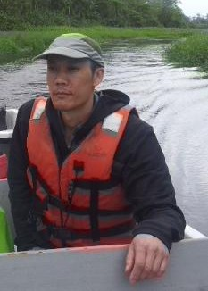
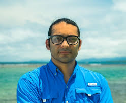
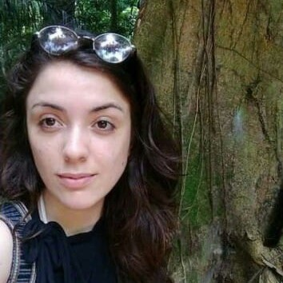
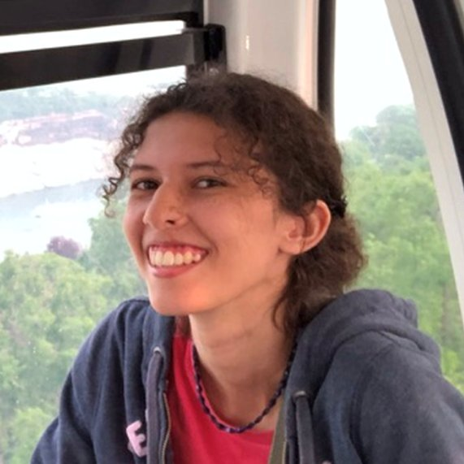
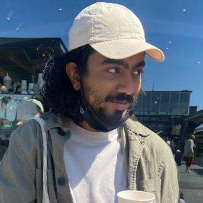
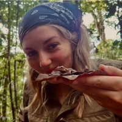
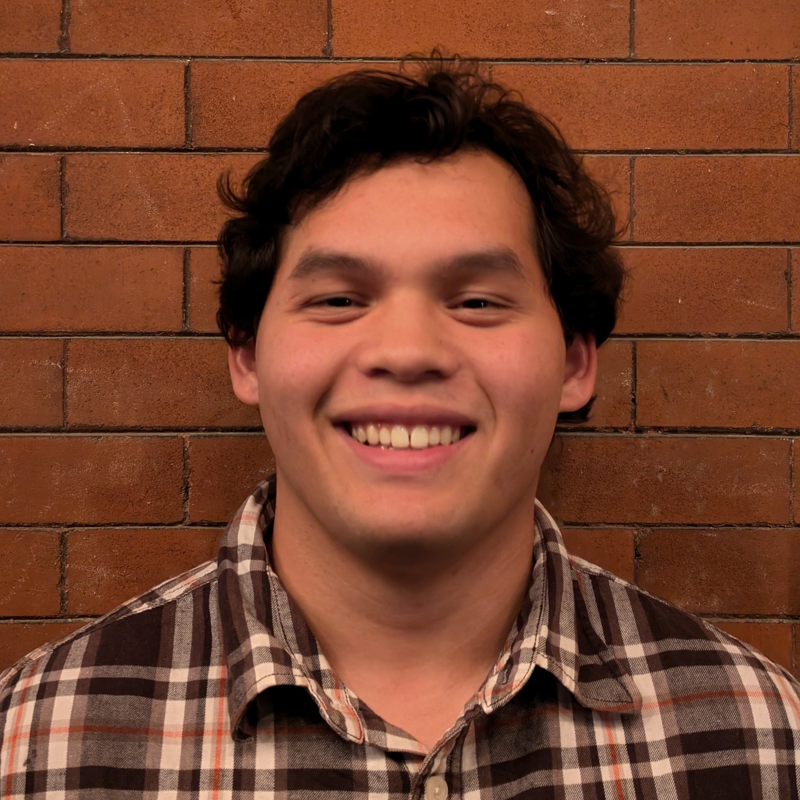
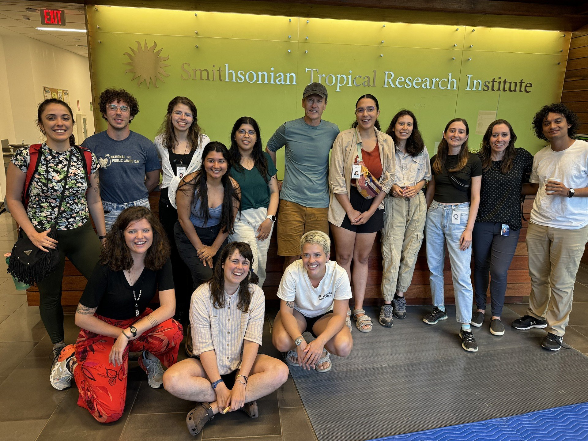

About Us
PRISM — Panama Research and Integrated Sustainability Model
The Panama Research and Integrated Sustainability Model (PRISM) is a platform for multidisciplinary research in sustainability science, developped through a partnership between McGill University and Panamanian institutions.
We aim to develop two main elements:
- A nationwide spatially-explicit computational model of Panama’s social and natural assets, which will be continually improved as different disciplines become integrated.
- A network of international and Panamanian researchers, providing substantial human capital and multidisciplinary expertise.
Chair:

PRISM is led by Brian Leung— associate professor in the Department of Biology and the Bieler School of Environment at McGill University. His research focuses on 1) large-scale ecological predictions, and 2) environmental decision-making. He is now focusing on the development of PRISM as a concrete tool for forecasting, evidence-based decision making, education and outreach geared towards sustainability. He is also director of the McGill-STRI Neotropical Environment Option.
Our team:
-

-
Jorge Manuel Morales-Saldaña
jorge.morales@mail.mcgill.ca
Jorge is a Ph.D. student in the Neotropical Environmental Option (NEO) program of the Biology Department at McGill University. Broadly, he is interested in the conservation of coastal marine ecosystems. His Ph.D. focuses on mangrove ecosystems, which are one of the most valuable coastal habitats in the provision of multiple ecosystem services such as fisheries, coastal erosion control, and cultural values. His studies are primarily conducted in Panama, where the effects of different anthropogenic impacts and climate change on mangroves are evident.
-

-
Ana Catarina Avila Vitorino
ana.avila@mail.mcgill.ca
Ana is a Ph.D. student at McGill University, co-supervised by Dr. Fiona Soper and Dr. Brian Leung. Her research focuses on tropical forests, which play an important role as biodiversity hotspots and carbon sinks. Tropical forests are currently facing serious threats, one of the most important being the expansion of industrial agriculture. During her Ph.D., Ana has been studying agricultural practices in Panama (and around the world) to see how they impact the recovery of rainforests after land abandonment.
-

-
Isabella Serrette
isabella.serrette@mail.mcgill.ca
Isabella was born and raised in Barbados and completed a BSc in Environmental Science at the University of the West Indies. She is currently doing an M.Sc. in the Leung Lab, which focuses on the distribution and community structure of soil faunal biodiversity in the Caribbean.
-

-
Shriram Varadarajan
shriram.varadarajan@mail.mcgill.ca
Shriram completed a B.Sc. at McGill University, and is currently pursuing a Ph.D. at this same institution. Shriram is completing work on hydrological modeling in Panama, in relation to integrated sustainability modeling under climate change scenarios.
-

-
Jade Aitken
jade.aitken@mail.mcgill.ca
Jade completed a B.Sc. in Biology at the University of British Columbia, and is currently completing an M.Sc. at McGill University in the Leung Lab. She is working on a social, economical, and ecogical model related to mining and agriculture in Panama.
-
Andrew Sellers
Andrew earned his Ph.D. from McGill University, and is currently a postdoc in the O’dea lab at the Smithsonian Tropical Institute in Panama. As a marine ecologist, he studies how marine predators and herbivores shape coastal ecosystems, and how those species interactions are influenced by changes in environmental conditions imposed by oceanographic processes.
-

-
Sami Sugiarta
sami.sugiarta@mail.mcgill.ca
Sami is a 3rd year undergraduate student studying Environment and Computer Science at McGill University. He has been contributing to PRISM through his work in the Leung Lab.
-
-
James McCormick
Jamie completed a B.Sc. at McGill University in 2025, and is now completing a Ph.D. in Statistics. During his time as an undergraduate student, Jamie worked in the Leung Lab, where he contributed to various PRISM projects.

Context: McGill in Panama
The Panama Research and Integrated Sustainability Model (PRISM) emerges from long-standing partnerships between McGill University and institutions in Panama,
and matches McGill's commitment to sustainability (Vision 2020). Over the past 17 years, McGill programs - the Panama Field Study Semester (PFSS), Neotropical
Environment Option (NEO), and NSERC CREATE Biodiversity, Ecosystem Services, Sustainability (BESS) program - have trained >500 undergraduates
(>50 from Panama) and 82 graduates (29 from Latin America), with interns working in 30 Panamanian organizations.
We have over 40 McGill faculty members as part of our McGill-Panama programs, across seven departments and four faculties. We also have the UNESCO Chair in Dialogues on Sustainability and strong existing connections with institutions in Panama, including the Smithsonian Tropical Research Institute,
and Universidad Católica Santa María la Antigua.
Panama is an exemplar of sustainability issues in the Global South. It is characterized by rapid economic growth (10.6% in 2011) and population growth
(>40% by 2050), has a highly skewed wealth distribution (17/136 in the world), is a hub of international shipping traffic (Panama Canal), and is a hotspot
of biodiversity. Panama therefore faces difficult choices regarding how to best to balance the sustainability of the country's natural assets (e.g., forested land,
water basins, biodiversity) with its economic interests. To develop resilient policies, it is critical to understand how alternative development trajectories will
have ramifications for water use, the canal watershed, protection of forests, indigenous peoples, and agriculture, particularly given changing climates and environmental conditions.

Figure: 2024 STRI-McGill NEO Field Course students with STRI Dean of Academic Programs Owen McMillian and instructor Holly Cronin.
Photo credit: Holly Cronin
Vision Statement
By 2050, human population size is projected to increase to >9Billion,
with 70% of the human population living in cities, and potentially substantively different environmental
conditions. These massive changes will have wide-ranging consequences far beyond the boundaries of cities,
with effects on trade, migration, land-use patterns, resource use, and sustainability of socio-ecological
systems. While these issues are global in extent and their analyses relevant at the broadest possible scale,
countries in the Global South may be particularly vulnerable, given rapidly growing economies and relaxed
regulations. In particular, we focus on Panama as a template for sustainability science at the national scale,
one which partners international researchers with researchers from Panama, to ensure that the outcomes of
PRISM help meet the goals of Panamanian stakeholders, improving long-term welfare and livelihoods.
PRISM is a countrywide spatially-explicit computational model, which we envisage will form the basis for wide-ranging analyses geared towards sustainability, some of which can be found on our Projects page. PRISM will incorporate social, environmental and economic dimensions across space and time. Thus, PRISM will be true to a fundamental tenet of sustainability by treating these as dynamic interacting entities that cannot be viewed in isolation. We envisage PRISM as a platform to explore interactions between diverse research across disciplines, to engage communities and to facilitate evidence-based decision-making. Thus, PRISM will serve the research community, stakeholders, and policy makers interested in sustainability questions.
Over the longer time-horizon, we envisage PRISM to become self-perpetuating, comprised of a network of international and Panamanian researchers, taking ownership of the platform and providing substantial human capital and multidisciplinary expertise. In this way, we envisage that PRISM will evolve as a continually-improving, open-source platform for sustainability science.